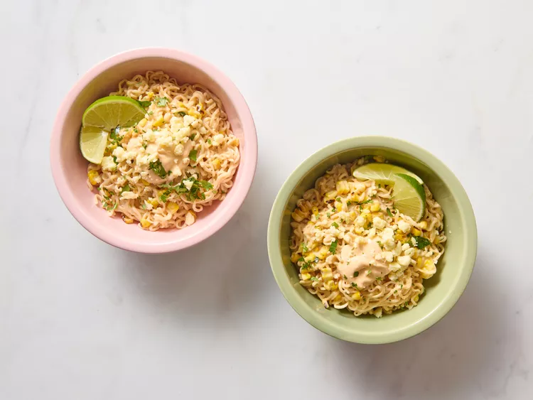

Gather all ingredients. Heat an indoor or outdoor grill to medium-high heat.
Add corn and jalapeno directly to the grate. Grill 5 minutes. Turn and grill 5 minutes more.
Transfer to a cutting board. Cut corn off the cob. Seed and chop the jalapeno. Set aside.
Whisk mayonnaise and hot sauce together. Set aside.
Heat water, half-and half, and chili powder in a large skillet over medium heat. Add ramen and simmer for 2 minutes. Flip ramen over and cook until noodles are broken up, about 2 minutes more.
Stir in mozzarella cheese and cook until slightly thickened, about 2 minutes.
Stir in corn and jalapeno.
Transfer to serving dishes; top with mayonnaise mixture. Garnish with lime wedges, cotija, and cilantro.
